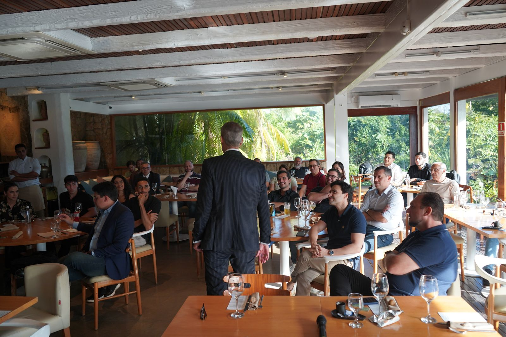

Prova de trabalho
Quem já navegou com a Pharos
De farmácias a hidroelétricas, de Fortaleza aos Estados Unidos. Cada projeto é diferente, mas o método é o mesmo: diagnóstico, plano, execução e resultado.
Na voz dos clientes
O que dizem depois de navegar com a gente
"O trabalho com a Pharos foi excepcional. Foram além da consultoria tradicional, entregando não apenas indicadores e painéis sólidos, mas também conhecimento em tecnologia e programação. O diferencial foi a real transferência de conhecimento para nossa equipe."
Francisco Morel
Sócio da Astor Capital
"Equipe altamente capacitada, ideias inovadoras e o básico extremamente bem-feito. Sempre que posso indico para colegas e amigos empresários, porque tenho certeza da competência e do resultado."
Tiago Silveira
Sócio da Hidroelétrica Center
"Minha experiência com a Pharos foi altamente positiva. É um time capacitado, que desenvolve soluções inteligentes para as empresas."
Fernando Sobreira
CEO da Brazilian Best Granite
Onde já atuamos
Setores diferentes, mesmo rigor
Saúde, varejo, energia, tecnologia, alimentação, moda, construção e serviços. A diversidade de setores é o que treina o nosso olhar: cada mercado ensina algo que fortalece o próximo projeto.
Do pequeno ao grande
De empresas familiares a grupos com operação em vários estados.
Brasil e exterior
Projetos em mais de 11 estados e clientes fora do país.

Empresas atendidas
Marcas que confiam na Pharos


O próximo case
Quer que a sua empresa esteja nessa página?
Conta pra gente o seu momento. A primeira conversa é sem custo e sem compromisso.